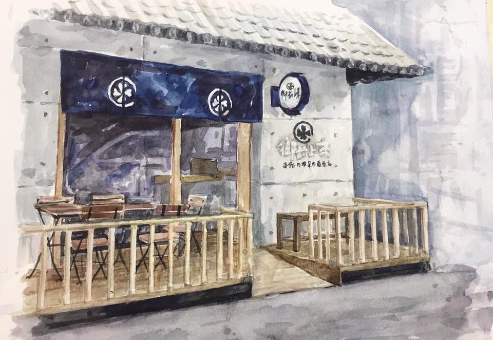
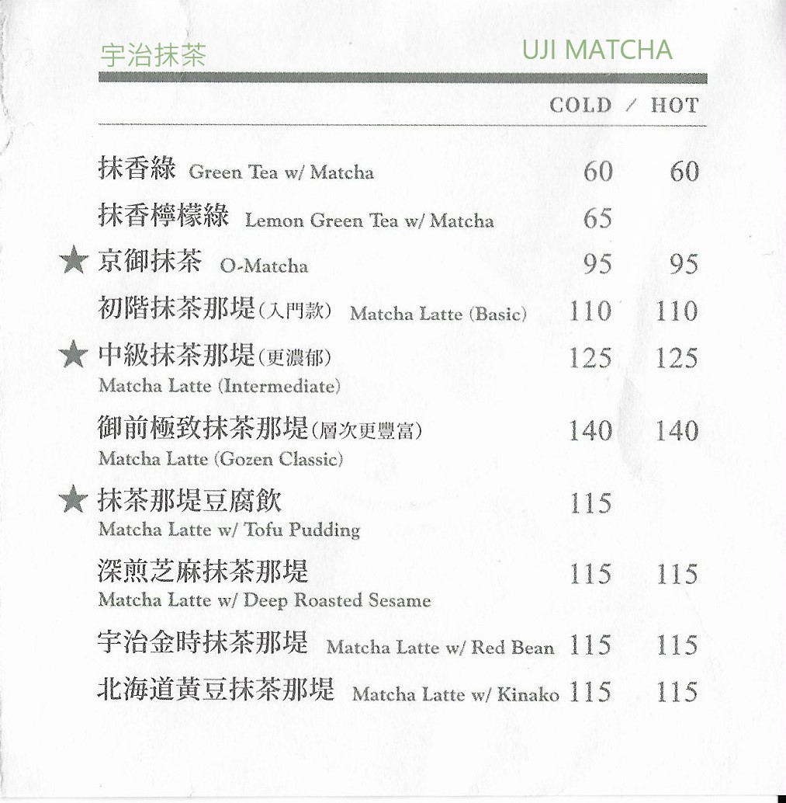
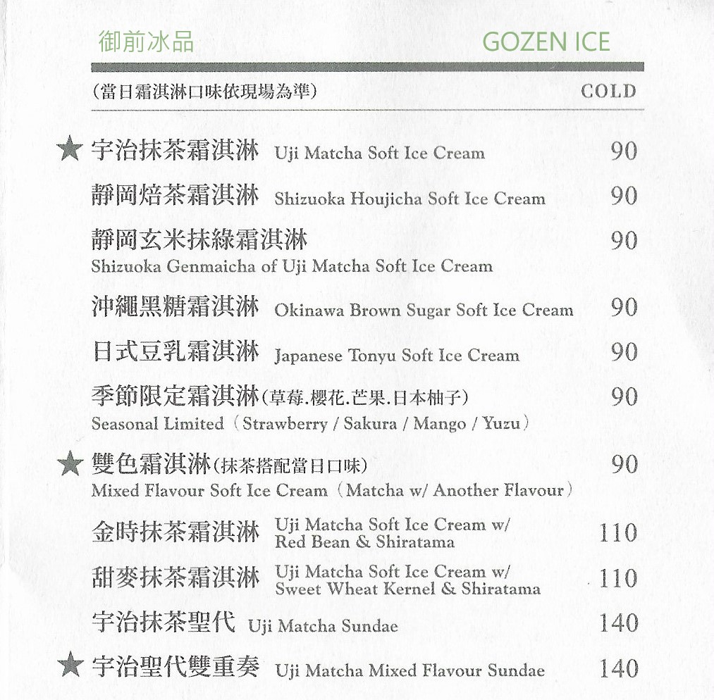
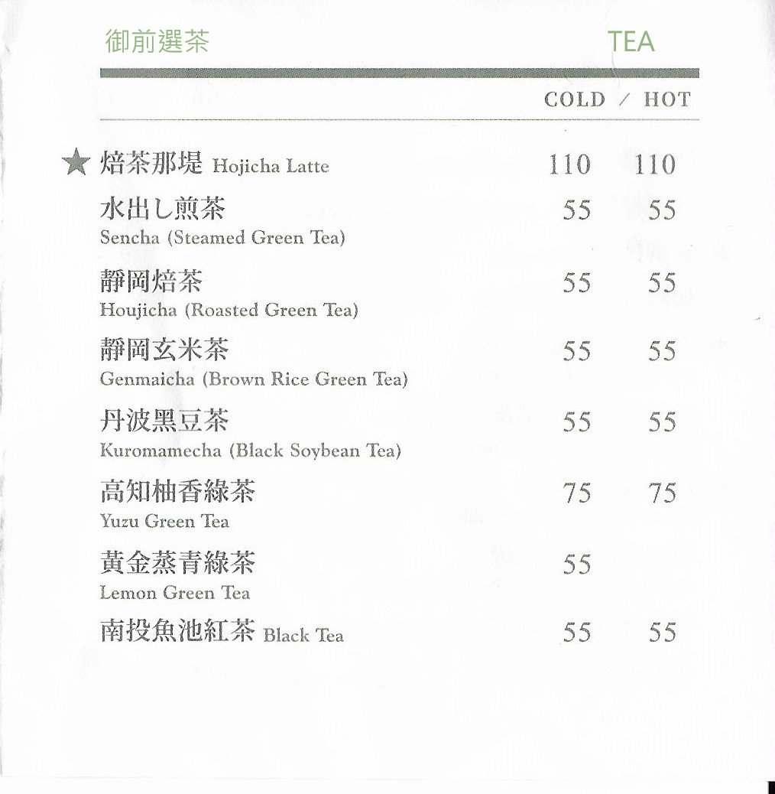
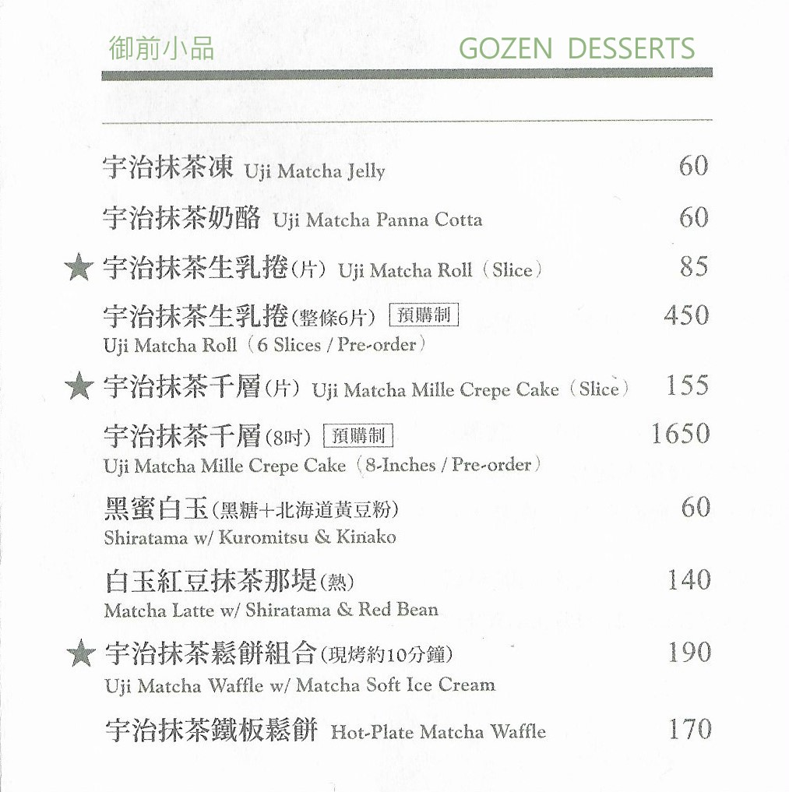

<深根高雄的京都宇治抹茶!!!>前面提到抹茶可以做成很多元的甜品，所以想介紹一間我特別喜歡的店鋪。

位落於高雄漢神百貨附近的「御前上茶」(總店)，
它是在2013年3月成立的，最初是由幾位熱愛日本文化的友人所共同成立。
取名「御前上茶」，是希望將抹茶飲品以最誠摯的心情奉上給尊貴的顧客。
店內標榜以道地日本京都宇治抹茶飲品、冰品、點心為主軸，
嚴選在日北已有180餘年歷史(創業於西元1836年)的京都抹茶老舖作為原料，
並搭配多款精選日本茶與台灣茶，期望能提供顧客安心且優質的茶類選擇。
在2019年3月，適逢品牌成立屆滿六週年，
御前上茶全面推動品牌升級之「二代店」計劃，
並正式將品牌之英文名稱定為「GOZEN KAMICHA」。

Ⅳ抹茶★推薦(下)
Ⅴ學期心得